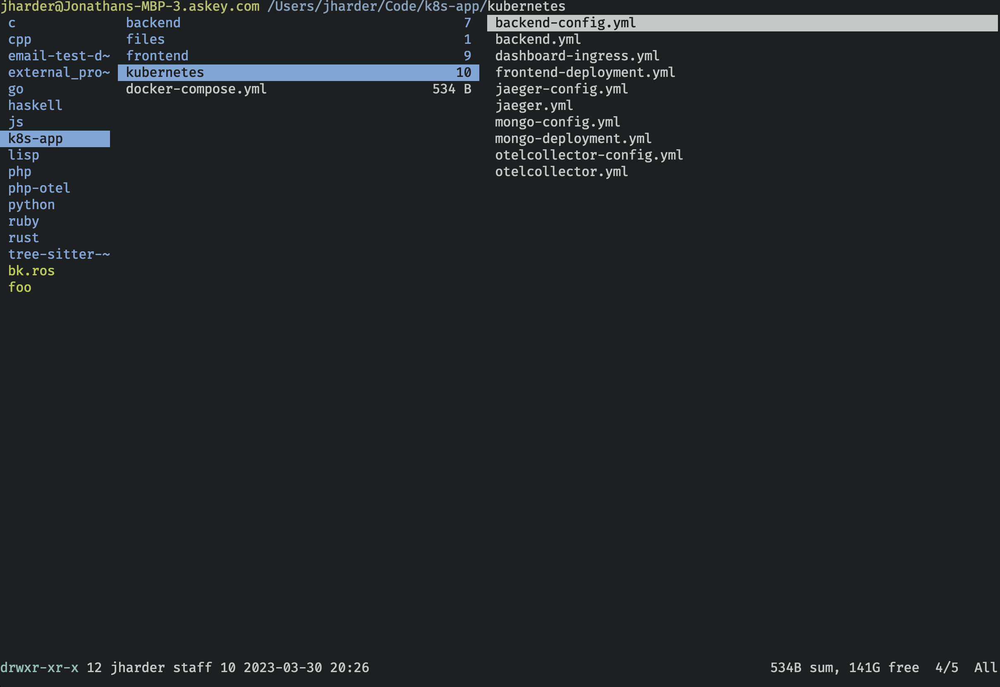
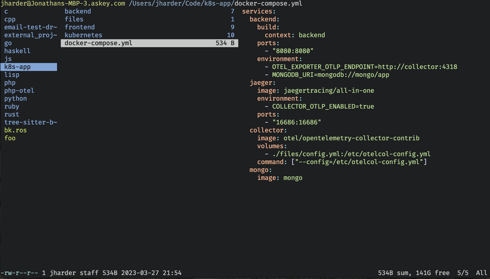
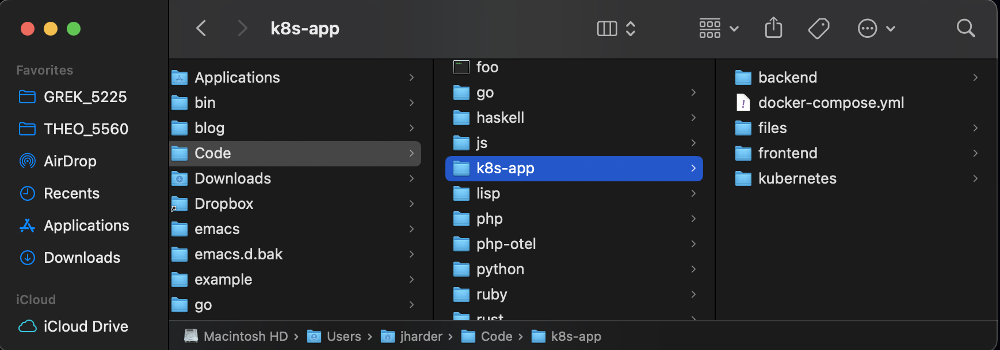
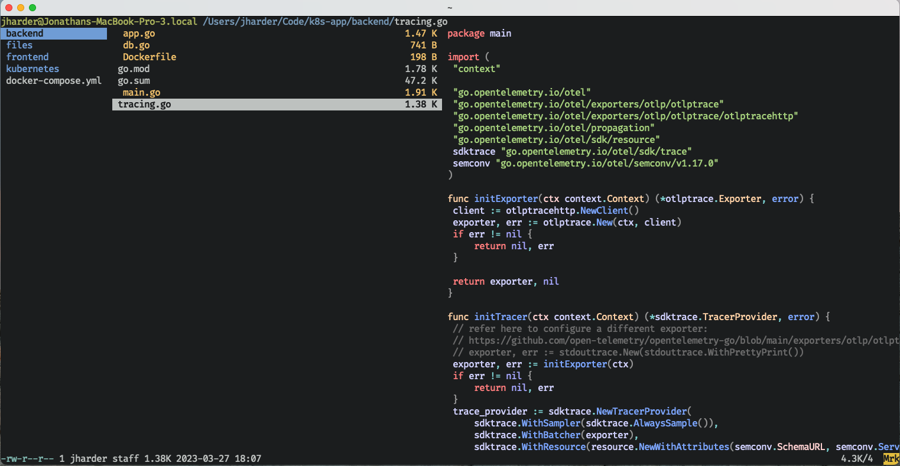
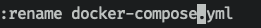
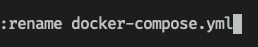
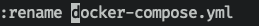
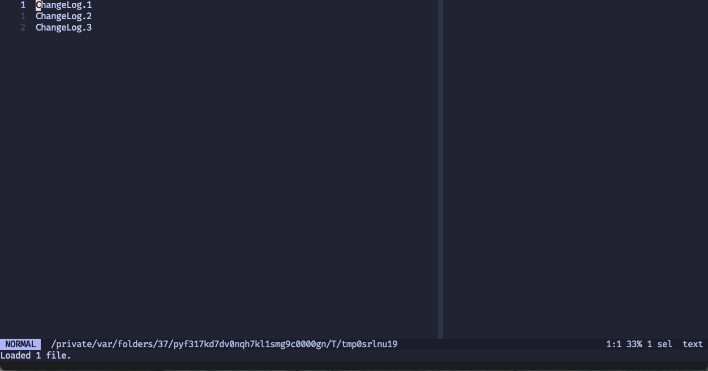
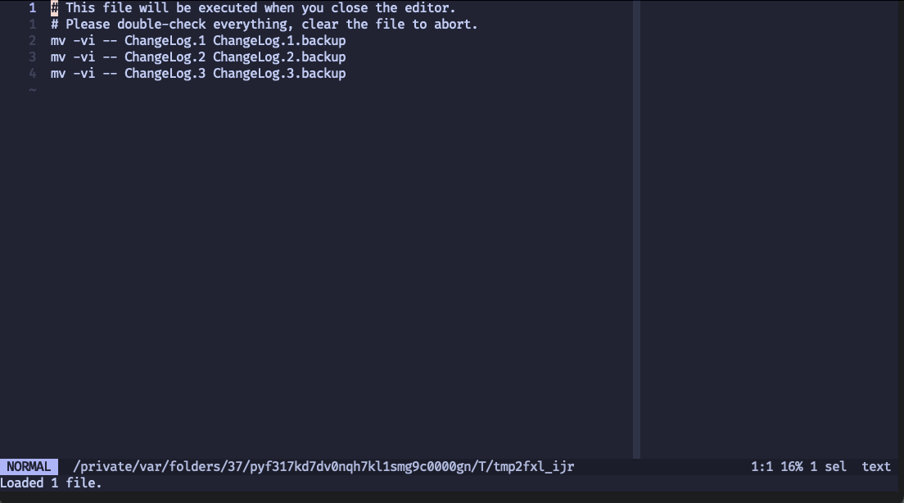

Ranger - Terminal Tooling
Ranger file_managers
Ranger is a "console file manager with VI key bindings." Specifically it is a terminal file manager. You're most likely familiar with GUI file managers in the form of mac's finder, or the directrory viewer built into your editor of choice.
Terminal file managers live in a unique space as they tend to focus on keyboard based
workflows over click-and-drag mouse-based workflows. How can you get anything done as
a file manager using just your keyboard? If you're in the terminal, why not just use
good ol' cd, mv, cp, rm and friends?
What you lose in intuitive (read: familiar) UI, you gain in expressive and configurable power.
Convinced? Not yet? Let's see some examples
Installing
If you want to follow along and run these examples in your own terminal, you can install ranger easily using the package manager on your operating system. On mac, it's as easy as:
brew install ranger
Overview

This is the initial view using ranger. You'll notice three vertical columns (and three
highlighted files/directories). The center of the three is the working column, and it's on
the selected entry in this column that your actions will operate (in this example, on the
kubernetes directory).
The left column is the parent directory, and the right directory displays either the contents of the current directory if a directory is highlighted, or a preview of the file if a file is highlighted.

You might recognize this three-pane design pattern. If you've used the GUI file manager for macOS, Finder, this design has been a staple since their NeXT days.

Navigation and file manipulation
Movement
For a tool that touts "VI key bindings", no one should be surprised at the basic file
and directory navigation keys: h, j, k, and l. j moves the selection in the center column one item
down. k moves one item up. l will either move into the directory of the selection, or open the
file of the selection by using your configured $EDITOR. gg moves the cursor to the first item
in the directory, G moves it to the bottom.
Moving around with h, j, k, and l allows you to fly around your file system, and the three-column view gives you a quick view of not only what's in the current directory, but also both what's in the parent directory and child directory.
If this was all ranger could do, it would already be a fairly handy, albeit limited use tool (it also wouldn't really be a full 'file manager' in that case either). Ranger handles much more however.
Copying, Deleting, Moving
Ranger takes the "VI bindings" much further than simple movement. Want to copy a file? Hit
yy (the letter y, hit twice) to copy the file into a temporary register, then in the
destination of your choice, hit pp to paste the file. Deleting is much the same; just hit
dd to delete your file. To move a file, you just delete dd but then paste it pp wherever
you want.
Change your mind about deleting a file before pasting? Hit u to undo the delete. Want
to copy multiple files? Hit Space over all the files you want to copy (they should be marked
with a different color and be indented slightly to show they're selected), then use yy and pp
as before only this time, all the selected files will be copied/pasted.

In this example, app.go, db.go, Dockerfile, and main.go are selected (but not tracing.go).
When you mark a file, the highlighted line is automatically moved to the next item (so you
can just hit Space Space Space and select consecutive items), but it is not included in
the multiple selection.
Renaming
So far, the mechanism to move a file does not allow for renaming it (it is just copied
and pasted without changing anything). How do you rename a file then? Like in vim, there's
multiple ways to edit a file name (analogous to a word in vim). To completely change the
file name, you can hit cw (change word, in vim language). This gives you a blank text
input area to rename the file to whatever you want. If you only wanted to change the
basename of the file, you can hit a, and the rename prompt field will be pre-populated
with the file and the cursor will be on the . file just before the extension.

If you want to change the extension (or just want to have the whole file name pre-populated
so you can change whatever you want), hit A and the cursor will be at the very end of the file
name in the prompt.

And lastly if you want to prefix something in front of the file name, you can hit I to
pre-populate with the file and the cursor at the front.

Bulk renaming
But what if you have a bunch of files to rename, and you may or may not want to rename them differently? What if you want to make the same change to each file name?
After highlighting the files you're interested in, type :bulkrename (ranger offers tab
completion so you can just type :b<TAB> and the rest will be filled in for you). A temporary
file will be spun up with each of the file names you selected. You can use the full power of
your editor to rename the files however you want.

When you exit the file, another temp file
will be conjured up giving you a preview of the shell commands it will run (using mv).
You have one last chance to change things (like changing the destination directory the files
will be renamed/moved to). After saving, ranger will execute the rename.

Further reading
This only scratches the surface of ranger's functionality. Ranger supports tabs, bookmarks, macros
custom user-defined functionality using python and more. Their documentation is extensive
and it can do more than I have the time to go over. The :flat command is particularly interesting.